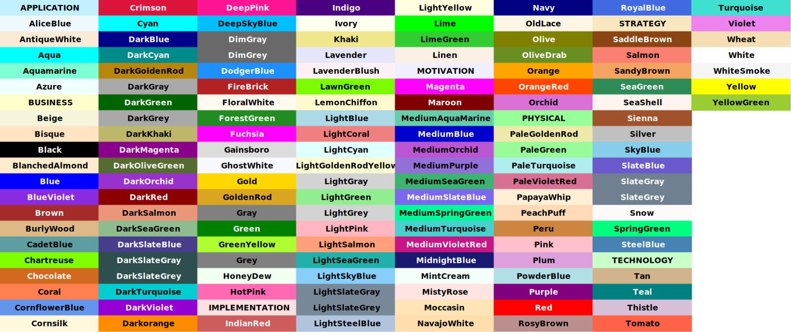

color
html
直接写原生的html代码来渲染,参考sketchy
- Cras justo odio 14
- Dapibus ac facilisis in 2
- Morbi leo risus 1
- Cras justo odio 5
- Dapibus ac facilisis in 4
- Morbi leo risus 9
- Morbi leo risus 8
- Morbi leo risus 0
table
| Platform | Command |
|---|---|
| Mac/Linux | |
| Windows |
控制 颜色,在table代码下方写上
: Platform Command {.striped .hover tbl-colwidths="[35,75]"}code
line-numbers
{.bash code-line-numbers="false"} 全局已经设置显示行号, 这里可以临时禁止
ls -lfilename
code annotation
- 1
- 还可以设置成 below,会在下方直接显示, select 则需要点击
library(tidyverse)
library(palmerpenguins)
penguins |>
mutate(
bill_ratio = bill_depth_mm / bill_length_mm,
bill_area = bill_depth_mm * bill_length_mm
)- 1
-
Take
penguins, and then, - 2
- add new columns for the bill ratio and bill area.
include code file
highlight
This is some text
hello world
hello world
hello world
card
生成后是 .class_name的div结构 ,去看 sketchy 里的元素源码来搞
Here is a warning.
abc
panel-tabset
callout
Note that there are five types of callouts, including: note, warning, important, tip, and caution.
This is an example of a callout with a title.
This is an example of a ‘folded’ caution callout that can be expanded by the user. You can use collapse="true" to collapse it by default or collapse="false" to make a collapsible callout that is expanded by default.
Some quick example text to build on the card title and make up the bulk of the card’s content.
citation, footnote and cross-reference
鼠标移动到 Xie (2015) 上面 knitr1. Listing 1 shows you how to disable hover behaviour.
添加class 让这个隐藏了, 这样只有我们hover 才会显示, 暂时还有问题,这个移动移出有2种显示..
references.bib 添加如下
extension
quarto-rust
将代码块 中使用的 rust改成 playground-rust, 用{} 包起来
kroki
上面2个扩展可以抛弃了, 使用下面这个就足够了.
这个插件有问题, 需要自己修改, 我已经修复bug, 并且增加了会下载生成的svg到本地
_quarto.yml 配置自己的kroki 服务器
在页面文件里头部写上, 使用kroki过滤, 到时候就会执行 _extension/xxxx/kroki.lua
plantuml等
excalidraw
- 以导入文件的方式来, 其他diagram 也可以
- 使用这种方式,如果你修改了 diagram文件,是不会重新生成图片的,你可以
代码块里 加一行空格,保存
d24
生成的svg 太大了, 暂时不知道怎么解决,先不用了,有空研究
https://github.com/svg/svgo svg压缩
我发现 不要用302主题, 会变小多了, 然后 sketch: true 不要用,再变小
classes: {
empty: {
label: ""
style: {
fill: transparent
stroke-width: 0
}
}
text: {
style: {
fill: transparent
stroke-width: 0
}
}
cluster: {
style: {
fill: transparent
stroke-dash: 4
stroke: "#C6D3DF"
}
}
grid: {
grid-columns: 1
label: ""
style: {
fill: white
stroke-width: 0
}
}
row: {
grid-rows: 1
label: ""
style: {
fill: transparent
stroke-width: 0
}
}
}
vars: {
left-cluster: {
label: "n-sized Vector"
class: cluster
0*.style.fill: "#DFEFFA"
0*.style.stroke: black
grid-rows: 1
grid-gap: 0
label.near: outside-top-left
"0.62"
"0.15"
empty1.class: empty
n.class: text
empty2.class: empty
"0.91"
"0.48"
"0.15" <- n -> "0.91"
}
right-cluster: {
label: "m-sized Vector"
class: cluster
0*.style.fill: "#72F5FF"
0*.style.stroke: black
grid-rows: 1
grid-gap: 0
label.near: outside-top-left
"0.62"
"0.15"
empyt1.class: empty
m.class: text
empty2.class: empty
"0.91"
"0.48"
"0.15" <- m -> "0.91"
}
}
grid-rows: 2
top-row: {
class: row
empty.class: empty
empty.width: 1100
Random Matrix Generator: {
width: 300
height: 170
style.font-size: 20
style.fill: "#A7BBCF"
style.stroke: black
style.border-radius: 10
}
}
bottom-row: {
class: row
left-grid: {
class: grid
1: ${left-cluster}
2: ${left-cluster}
3: ${left-cluster}
}
dot-container: {
class: empty
grid-columns: 1
empty1.class: empty
dot: Dot product {
class: text
circle: "" {
shape: circle
style.fill: black
style.stroke-width: 0
width: 20
height: 20
}
label.near: outside-bottom-center
}
}
matrix-container: {
class: empty
grid-columns: 1
matrix: Target dimension matrix {
label.near: outside-top-center
grid-rows: 4
grid-gap: 0
*.width: 100
*.height: 100
*.style.fill: "#F1F6F9"
*.style.stroke: black
"0.41"
"0.32"
"0.92"
"0.13"
"0.74"
"0.15"
"0.53"
"0.21"
"0.97"
"0.45"
"0.11"
"0.05"
"0.61"
"0.77"
"0.59"
"0.83"
}
}
empty.class: empty
right-grid: {
class: grid
1: ${right-cluster}
2: ${right-cluster}
3: ${right-cluster}
}
matrix-container -> right-grid
}
top-row.Random Matrix Generator -> bottom-row.matrix-container.matrix